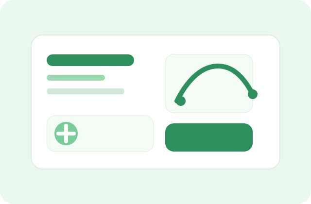

Cadastre seus hábitos
Registre transporte, alimentação e energia para criar uma base real de acompanhamento.
Aplicativo de sustentabilidade
O EcoTrack ajuda você a acompanhar deslocamentos, alimentação, energia e metas semanais com clareza, motivação e uma experiência mais próxima de um produto real.

Você está a caminho de um mês mais verde.
Como funciona
Registre transporte, alimentação e energia para criar uma base real de acompanhamento.
O app sugere pequenas ações e lembretes personalizados conforme seu contexto e rotina.
Veja sua evolução em gráficos, metas e desafios com uma experiência mais próxima de um app real.
Confiança
Uma comunidade crescente que já usa o EcoTrack para transformar pequenos hábitos em resultados reais.
Impacto
Os usuários relatam queda no consumo de transporte e energia após 30 dias de uso.
Depoimento
— Ana, usuária Premium
Experiência de produto
O EcoTrack une acompanhamento, metas, comunidade e orientação inteligente em uma experiência visual simples, intuitiva e preparada para crescer com o usuário.
Seu perfil está sendo preparado com metas, lembretes e dicas personalizadas.
Complete o cadastro para começar a jornada.
Usar transporte público 3 vezes.
Reduça 1 refeição com carne.
Mutirão de reciclagem esta semana.
Você ganhou 80 pontos por participar.
Proposta de valor
Transforma hábitos cotidianos em decisões simples, visíveis e motivadoras com metas, alertas e acompanhamento claro.
Cria conexão local por meio de desafios, pontos de coleta e eventos que fortalecem a ação coletiva.
Oferece um modelo sustentável com assinaturas premium, parcerias e um marketplace verde alinhado com propósito.
Problema
Há falta de orientação prática, acompanhamento claro e incentivos contínuos para transformar intenção em hábito.
Solução
O EcoTrack transforma rotina em ação com metas, insights, desafios e uma experiência simples e visual.
Impacto em números
Ao combinar dados simples, metas e acompanhamento, o EcoTrack transforma rotina em rotina mais sustentável.
Fluxo de cadastro
Acesso
Dashboard
Hoje
Você está perto de um ponto de coleta de vidro. Que tal fazer uma parada rápida?
Perfil
Nível 3 · 68% da meta mensal
Comunidade
Hoje levei minha sacola de tecido e reduzi o uso de plástico no mercado.
Mutirão de reciclagem esta semana: participe e ganhe recompensas especiais.
Troquei meu trajeto de carro por bike e senti uma diferença grande no meu impacto.
Mapa colaborativo
Rua das Flores, 120
Praça Central · Hoje · 8h
Av. Verde, 45
Scanner de produtos
Simulação de escaneamento para demonstrar a experiência do app.
Produto com embalagem reciclável, ingredientes de origem responsável e certificação verde.
Assistente virtual
“Você anda muito de carro, que tal tentar carona solidária 1 vez por semana?”
Notificações inteligentes
Planos
R$ 0/mês
R$ 19/mês
Funcionalidades
Registre transporte, alimentação e energia para ver seu impacto no dia a dia.
Defina desafios semanais e acompanhe sua evolução com facilidade.
Ganhe recompensas, suba no ranking e compartilhe progresso com amigos.
Descubra mercados, restaurantes e serviços eco-friendly perto de você.
Receba lembretes úteis para agir de forma simples e sustentável.
Simulador
Estimativa mensal
Seu impacto ainda pode melhorar com pequenas escolhas.
Motivação
Mercado orgânico aberto hoje • Café com copo reutilizável • Oficina de reciclagem.
Leve sua sacola reutilizável, desligue o carregador e escolha o transporte mais limpo.
Funcionalidades avançadas
Conecte smartwatch, apps de saúde e até carros elétricos para acompanhar passos, calorias e deslocamentos.
Leia códigos de barras e verifique se um item é sustentável, reciclável ou possui certificação verde.
Descubra pontos de coleta, locais eco-friendly e espaços de descarte correto próximos a você.
Participe de missões coletivas e acompanhe metas compartilhadas com a comunidade.
Visualize gráficos detalhados do seu impacto e exporte relatórios para estudo ou compartilhamento.
Conecte o EcoTrack a outros serviços e apps para ampliar a experiência e a integração.
Experiência do usuário
Nível 2 • 68% da meta
Você pode registrar atividades sem internet e sincronizar depois.
Conexão social
Troque dicas, conquistas e desafios com outros usuários e inspire-se nas boas práticas.
Acompanhe feiras, mutirões de limpeza e palestras sobre sustentabilidade na sua região.
Compare progresso, complete metas e receba reconhecimento por hábitos positivos.
Inteligência artificial
O app aprende com seus hábitos e sugere mudanças simples e eficazes, como reduzir o uso de carro ou adotar refeições mais sustentáveis.
Simule como pequenas ações podem reduzir sua pegada de carbono ao longo de meses e anos.
Responda dúvidas rápidas sobre reciclagem, consumo consciente e melhores práticas para o dia a dia.
Monetização sustentável
Vitrine de produtos ecológicos, com parte da receita revertida para projetos ambientais.
Ofereça descontos e recompensas para quem atinge metas sustentáveis e participa de campanhas.
Tenha relatórios avançados, integração com empresas e benefícios exclusivos para usuários mais engajados.
Confiança e transparência
Mostre que os dados do usuário são protegidos, criptografados e não vendidos.
Publique estatísticas globais do impacto positivo gerado pela comunidade e pelos projetos apoiados.
Explique de forma simples o uso de dados, parcerias e o compromisso do app com a sustentabilidade.
Complementos técnicos
Gráficos mostram evolução do impacto ambiental ao longo do tempo e do progresso das metas.
Gere relatórios para compartilhar em redes sociais ou usar em trabalhos acadêmicos.
Permita que outros apps e serviços se conectem ao EcoTrack de forma simples e segura.
Conexão social
Espaço para compartilhar dicas, conquistas e desafios com outros usuários engajados.
Calendário de feiras, mutirões de limpeza e palestras sobre sustentabilidade na sua região.
Inteligência artificial
“Você anda muito de carro, que tal tentar carona solidária 1 vez por semana?”
Simule como pequenas mudanças podem reduzir sua pegada de carbono ao longo de meses ou anos.
Monetização sustentável
Vitrine de produtos ecológicos com parte da receita revertida para projetos ambientais.
Relatórios avançados, integração com empresas e recompensas exclusivas para usuários mais ativos.
Confiança e transparência
Mostre que as informações do usuário são protegidas e nunca vendidas.
Publique estatísticas globais do impacto positivo gerado pela comunidade e pelos projetos apoiados.
Modelo de negócio
Plano premium, marketplace verde, parcerias corporativas, publicidade responsável e gamificação com recompensas patrocinadas.
Para usuários, uma forma prática de reduzir o impacto ambiental com recompensas e comunidade; para empresas, uma plataforma de engajamento sustentável.
Desenvolvimento, servidores, IA, marketing, suporte e operação da comunidade.
Comece com versão gratuita, avance para premium e marketplace, depois expanda para parcerias, ONGs e internacionalização.
Transparência total, forte engajamento social, integração com IoT e IA e posicionamento como super app da sustentabilidade.
Resumo do pitch
Muitas pessoas querem agir de forma mais sustentável, mas não têm clareza sobre onde começar nem sobre o impacto real de suas escolhas.
O EcoTrack transforma hábitos cotidianos em metas, acompanhamento visual e recomendações práticas em um app intuitivo e envolvente.
Há espaço para um produto que una propósito, engajamento social e uma economia sustentável com potencial de escala.